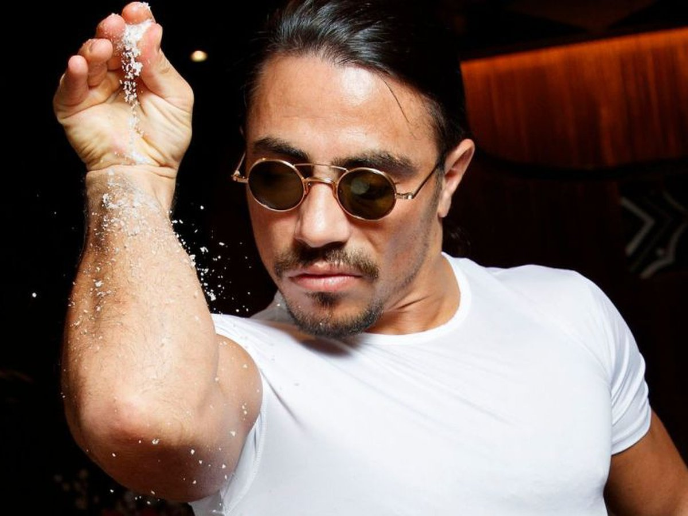

Salt Bae
Nusret Gökçe, apodado Salt Bae, es un cocinero y restaurador turco propietario de Nusr-Et, una cadena turca de steakhouses.
Su arte de cocinar y preparar la carne se convirtió en una sensación de internet. Posee formación como carnicero y cocinero.
Gordon Ramsay

Gordon James Ramsay OBE (Johnstone, Escocia; 8 de noviembre de 1966) es un chef, dueño de restaurantes y presentador de
televisión británico. En toda su carrera gastronómica ha sido condecorado con 17 estrellas Michelin, de las que hoy mantiene
siete.
Además de sus facetas culinarias, Ramsay es conocido por presentar programas de televisión y espacios de telerrealidad sobre
cocina, tanto en Reino Unido como en Estados Unidos. Entre los más conocidos se encuentran Hell's Kitchen, The F Word, Kitchen
Nightmares y la versión estadounidense de MasterChef.